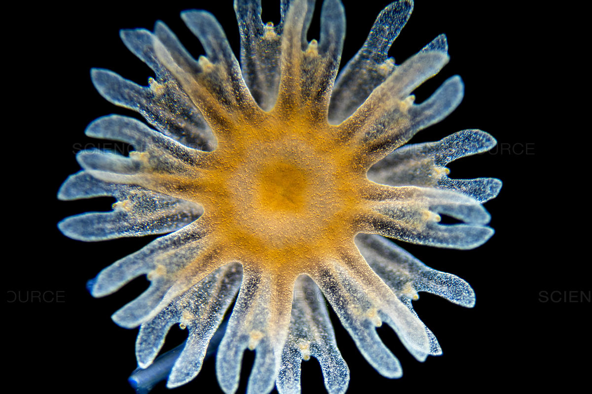
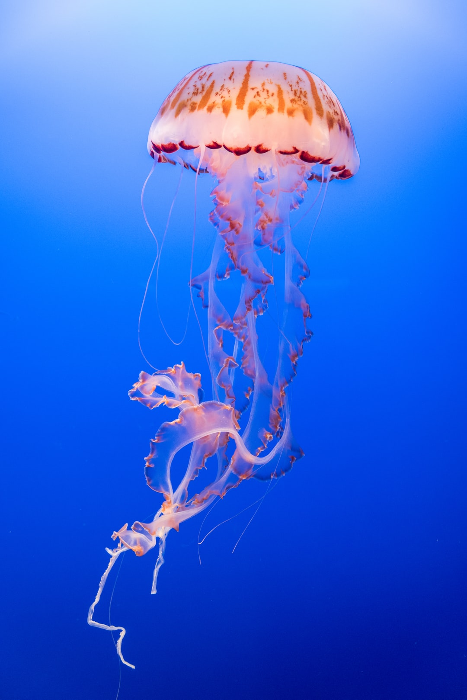

Ephyra and Medusa
When the polyp hydroid colony is ready for the next stage in its development,
the stalk portions of their polyps begin to develop vertical grooves, a
process known as strobilighting. These grooves continue to deepen until the
polyp resembles a ball of saucers; the topmost groove matures the fastest
and eventually births a tiny baby jellyfish, technically known as an
ephyra, characterized by its pointy spikes rather than full, round
bell. The free-swimming ephyra grows in size and, after many years, turns
into an adult jellyfish, known as a medusa, possessing a rigid, opaque bell.

